library(tidyverse)9 Introduction to linear regression models
9.1 Lesson preamble
9.1.1 Learning Objectives
Practice fitting simple linear regression models to data
Review theoretical foundations of linear regression
Learn how to interpret output of regressions fit using
lm()in RExtract fitted model parameters and confidence intervals
Understand hypothesis tests conducted during regression fits
Evaluate if the assumptions behind linear regression hold
Understand and practice fitting linear models with categorical variables, multiple variables, and variable transformations
9.2 Motivating example
In the early 2000s, researchers working at the Lion Center in the Department of Ecology & Evolutionary Biology at the University of Minnesota wanted to develop a reliable way to estimate the age of male African lions non-invasively and from a distance1. As world experts in lion conservation, they wanted to advise wildlife managers in the region on strategies to preserve lion populations - which are under threat from hunting - while recognizing that allowing some “trophy” hunting to continue might be inevitable. They hypothesized that by allowing hunting only of older males, , it may be possible to preserve healthy population sizes. While lion mane size and color had previously been used informally to estimate ages, their previous work showed it was unreliable.
In a 2004 Nature paper, they introduced a new, more reliable metric - the density of black coloration on the lion’s nose. They digitized high-resolution images of noses from 32 male lions in the Serengeti National Park whose ages were known, and examined the relationships. The data from this paper was extracted and shared publicly for use in the textbook “The Analysis of Biological Data” by Whitlock and Schulter 2 (two faculty in the Department of Zoology at University of British Columbia)
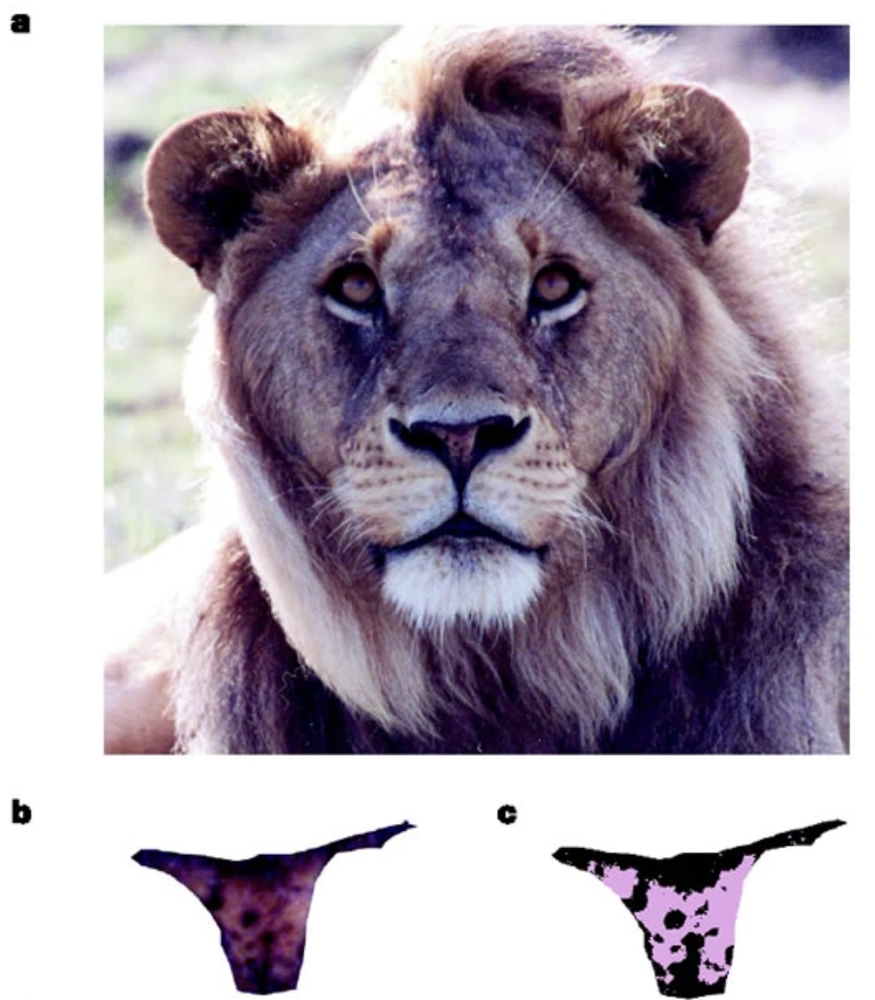
Let’s load in the data (and save it for easier access later):
lion <- read_csv(url("https://whitlockschluter3e.zoology.ubc.ca/Data/chapter17/chap17e1LionNoses.csv"))Rows: 32 Columns: 2
── Column specification ────────────────────────────────────────────────────────
Delimiter: ","
dbl (2): proportionBlack, ageInYears
ℹ Use `spec()` to retrieve the full column specification for this data.
ℹ Specify the column types or set `show_col_types = FALSE` to quiet this message.write_csv(lion, "data/lion.csv")And take a look at what it contains. Since the dataset is small we can simply look through all the entries
lion# A tibble: 32 × 2
proportionBlack ageInYears
<dbl> <dbl>
1 0.21 1.1
2 0.14 1.5
3 0.11 1.9
4 0.13 2.2
5 0.12 2.6
6 0.13 3.2
7 0.12 3.2
8 0.18 2.9
9 0.23 2.4
10 0.22 2.1
# ℹ 22 more rowsLet’s jump right to making a plot of the relationship between a lions age (ageInYears) and the proportion of the nose that is black (proportionBlack)
ggplot(lion, aes(proportionBlack, ageInYears)) +
geom_point(size = 3) +
labs(x = "Proportion black", y = "Age (years)")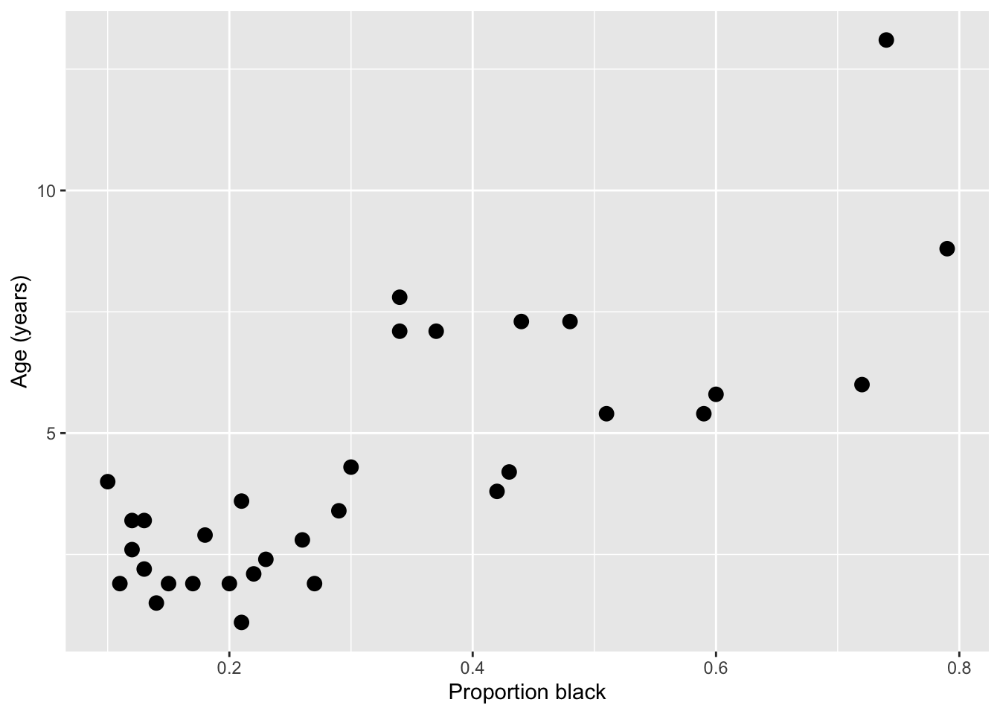
It looks like there’s a clear trend in the data - more black noses are associated with older lions. Let’s do two things: add a curve of the best-fit linear regression line to the plot, and calculate the correlation coefficient between the two variables
ggplot(lion, aes(proportionBlack, ageInYears)) +
geom_point(size = 3) +
geom_smooth(method = "lm", se = TRUE) +
labs(x = "Proportion black", y = "Age (years)")`geom_smooth()` using formula = 'y ~ x'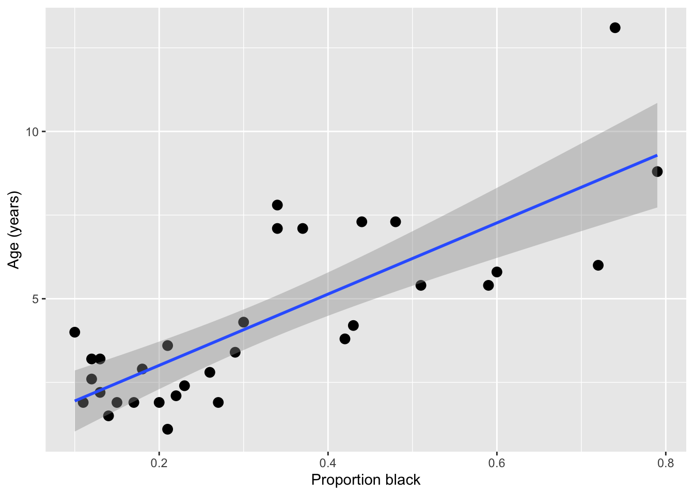
Note: While geom_smooth provides a quick way to add a regression line to an existing plot, we don’t recommend using that method to actually generate your model, as it’s hard to have full control over all the options and use the output to diagnose things.
cor(lion) proportionBlack ageInYears
proportionBlack 1.0000000 0.7898272
ageInYears 0.7898272 1.0000000Qualitatively, both the shape of the linear regression line and the magnitude of the correlation (0.80) suggest a strong relationship between nose coloration and age. However, we need do dig deeper here to really get something useful. Is a linear relationship really the best one to fit here? Does our data satisfy the assumptions needed to do this fit using ordinary linear regression? With this limited and noisy data, how sure can we be that this correlation is statistically significant? If we decided to use nose color to predict lion age, how accurate would that be?
To get at these issues, we want to formally estimate a model and examine the output carefully. We’ll do this using one of the simplest yet most powerful statistical tools - linear regression. Since you covered this topic already in your introductory statistics/biostatistics class, we’ll just review things here, and focus on how you can impliment these method in R. Let’s get started!
9.3 Basics of linear regression
9.3.1 Linear models: why we care
Linear models are at the heart of statistical practice in the physical, life, and social sciences! Linear regression actually refers to a family of modeling approaches that attempt to learn how the mean and/or variance of a response variable \(\boldsymbol{y} = (y_1,\dots,y_n)\) depend on (linear) combinations of variables \(\boldsymbol{x}_i = (x_{i1},\dots,x_{in})\) called predictors. In this lecture and the subsequent ones, we will discuss various forms of the linear model and assumptions placed on the data to make estimation and inference of the relationships between variables tractable. Our goal will be to become familiar with how these models work – namely, how their parameters are inferred using maximum likelihood — and practice fitting them in R.
9.3.2 The simple linear model
The simple linear models describes how a response \(Y\) depends on a contentious explanatory variable, \(x\), which is fixed. One way we write the assumption of the model is
\[ Y = \beta_0 + \beta_1 x + \epsilon \]
This is similar to the \(Y = m x + b\) notation you’ve seen since high school, but more generalizable and precise. We almost always use \(\beta\) to describe regression coefficients, with subscripts to indicate if it’s a coefficient for an intercept (\(\beta_0\)) or another variable (\(\beta_i\)). The error (or noise) term \(\epsilon\) makes it explicit that we don’t ever expect the \(Y\) data to be described exactly the regression model.
You likely have heard that linear regression chooses the “best fit” line by “minimizing the sum of the squared errors” - that is, the \(\epsilon\) distances the line and the observed data, something like this:
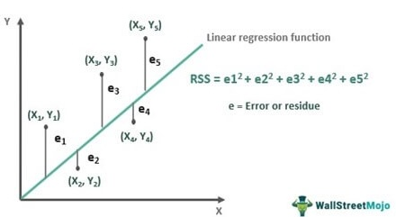
This is correct! However, there is another, equivalent way to think about what regression is doing - that matches better with how we thought about finding the “best” parameters to describe random data in prior lectures.
We can also say that we imagine the \(Y\) data is drawn from a normal distribution, where the mean of the normal distribution depends on the value of the \(x\) data in a linear way ($ = _0 + _1 x$)
\[Y \sim \text{Normal}(\beta_0 + \beta_1 x, \sigma^2).\]
The notation “~” is used in statistics to mean that a random variable is drawn from a certain distribution. Below is a visual representation of how the data generative process for \(Y\) is modeled. Here, we are saying that at each \(x\), \(Y\) is Normally-distributed with a mean that depends on the explanatory variable and the model parameters ($ = _0 + _1 x$)), and fixed variance \(\sigma^2\) (i.e., changing \(x\) does not change the variance in the observed response). The variance could be due to measurement error or other sources of variation in the variable \(Y\) that are not explained by the paired \(x\) value.

In turn, this specifies what the likelihood function is for the data \((y_1,x_1),\dots,(y_n,x_n)\):
\[ L(\beta_0,\beta_1,\sigma^2|\boldsymbol{x}_i,\boldsymbol{y}_i) = Normal(\mu = \beta_0 + \beta_1 x,\sigma^2) =\frac{1}{\sqrt{2 \pi \sigma^2}} e^{-(y-\mu)^2/2\sigma^2}.\]
Fitting a linear regression model is actually just a maximum likelihood problem! The result of fitting a regression model is a maximum likelihood estimation of the parameters \(\beta_0, \beta_1\) and \(\sigma\) . For ordinary linear regression, it turns out that you can actually find the maximum likelihood values with pen and paper math (calculus!), instead of having to search over a range of values like we’ve been doing, but for more advanced models, numerical optimization procedures are used to efficiently search for the combination of parameters that leads to the maximum likelihood.
9.3.3 Challenge
What assumptions are we making about the data when we fit simple linear model? What must be true of the data? Discuss.
Use the
dnormfunction to calculate the likelihood of observing a value Y = 10 paired with X = 5 when \(\beta_0 = 0.5\) and \(\beta_0 = 2\) and \(\sigma = 1\)
9.4 Examining regression output and checking assumptions
Let’s dig into our regression fits more! First, let’s fit the simple linear regression model using the lm() function
lionFitOutput <- lm(ageInYears ~ proportionBlack, data = lion)We can get a quick look at the output of using the summary() function on it
summary(lionFitOutput)
Call:
lm(formula = ageInYears ~ proportionBlack, data = lion)
Residuals:
Min 1Q Median 3Q Max
-2.5449 -1.1117 -0.5285 0.9635 4.3421
Coefficients:
Estimate Std. Error t value Pr(>|t|)
(Intercept) 0.8790 0.5688 1.545 0.133
proportionBlack 10.6471 1.5095 7.053 7.68e-08 ***
---
Signif. codes: 0 '***' 0.001 '**' 0.01 '*' 0.05 '.' 0.1 ' ' 1
Residual standard error: 1.669 on 30 degrees of freedom
Multiple R-squared: 0.6238, Adjusted R-squared: 0.6113
F-statistic: 49.75 on 1 and 30 DF, p-value: 7.677e-08After a call to lm(), R returns a lot of information. Here is what is in the printed summary() output table above:
- Descriptive statistics for the “residuals” \(\varepsilon_i = y_i - \widehat{\beta_0} - \widehat{\beta_1} x_i\), which tell us about how much variability there is in the data relative to the linear model specified and fitted.
- The regression coefficients minimizing the likelihood of the data and \(95\%\) confidence intervals for each. The CIs are expressed as standard errors, since the estimators have an approximate Normal distribution.
- A suite of test statistics! The \(t\) statistics and their \(p\) values are associated to the test \(H_0: \beta_i = 0\) vs \(H_1: \beta_i \neq 0\). Significance codes specify the level \(\alpha\) at which we have evidence to reject the null hypothesis for each coefficient.
- Measures of goodness-of-fit: the multiple \(R^2\) and the adjusted \(R^2\). These explain the proportion of variance that are explained by the model. The latter measures the proportion of variance explained by the linear model upon adjusting for sample size and \(\#\) of predictors.
We can access any of these quantities in R as variables. If we first assign a variable to the output, then use str() or View() to examine it’s structure, and then extract a particular variable. You can find a full description of the output here.
lionFitSummary <- summary(lionFitOutput)
str(lionFitSummary)List of 11
$ call : language lm(formula = ageInYears ~ proportionBlack, data = lion)
$ terms :Classes 'terms', 'formula' language ageInYears ~ proportionBlack
.. ..- attr(*, "variables")= language list(ageInYears, proportionBlack)
.. ..- attr(*, "factors")= int [1:2, 1] 0 1
.. .. ..- attr(*, "dimnames")=List of 2
.. .. .. ..$ : chr [1:2] "ageInYears" "proportionBlack"
.. .. .. ..$ : chr "proportionBlack"
.. ..- attr(*, "term.labels")= chr "proportionBlack"
.. ..- attr(*, "order")= int 1
.. ..- attr(*, "intercept")= int 1
.. ..- attr(*, "response")= int 1
.. ..- attr(*, ".Environment")=<environment: R_GlobalEnv>
.. ..- attr(*, "predvars")= language list(ageInYears, proportionBlack)
.. ..- attr(*, "dataClasses")= Named chr [1:2] "numeric" "numeric"
.. .. ..- attr(*, "names")= chr [1:2] "ageInYears" "proportionBlack"
$ residuals : Named num [1:32] -2.0149 -0.8696 -0.1502 -0.0631 0.4433 ...
..- attr(*, "names")= chr [1:32] "1" "2" "3" "4" ...
$ coefficients : num [1:2, 1:4] 0.879 10.647 0.569 1.51 1.545 ...
..- attr(*, "dimnames")=List of 2
.. ..$ : chr [1:2] "(Intercept)" "proportionBlack"
.. ..$ : chr [1:4] "Estimate" "Std. Error" "t value" "Pr(>|t|)"
$ aliased : Named logi [1:2] FALSE FALSE
..- attr(*, "names")= chr [1:2] "(Intercept)" "proportionBlack"
$ sigma : num 1.67
$ df : int [1:3] 2 30 2
$ r.squared : num 0.624
$ adj.r.squared: num 0.611
$ fstatistic : Named num [1:3] 49.8 1 30
..- attr(*, "names")= chr [1:3] "value" "numdf" "dendf"
$ cov.unscaled : num [1:2, 1:2] 0.116 -0.264 -0.264 0.818
..- attr(*, "dimnames")=List of 2
.. ..$ : chr [1:2] "(Intercept)" "proportionBlack"
.. ..$ : chr [1:2] "(Intercept)" "proportionBlack"
- attr(*, "class")= chr "summary.lm"print(lionFitSummary$coefficients) Estimate Std. Error t value Pr(>|t|)
(Intercept) 0.8790062 0.5688171 1.545323 1.327530e-01
proportionBlack 10.6471194 1.5095005 7.053406 7.677005e-08cat("\n")print(lionFitSummary$coefficients["proportionBlack","Estimate"])[1] 10.64712Even more information is contained in the non-summarized output, which you can preview using str(lionRegression) or View(lionRegression) or read more about here.
Let’s interpret the output here!
9.4.1 Challenge
What is the best estimate for each parameter, including 95% confidence intervals? Can you write the equation of the best fit curve?
Is there significant evidence that age varies with the proportion of the nose that is black? Describe the results of the hypothesis test in careful statistical language.
9.4.2 Diagnostic plots
We can do a quick check to see if the assumptions of the regression model are valid, by calling the function plot() on the output of the model fitting:
plot(lionFitOutput) 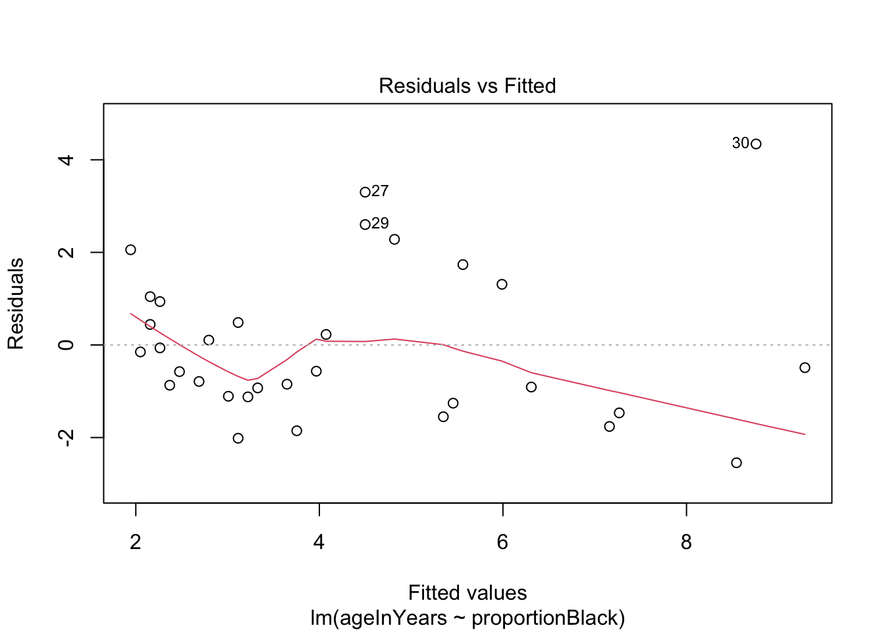
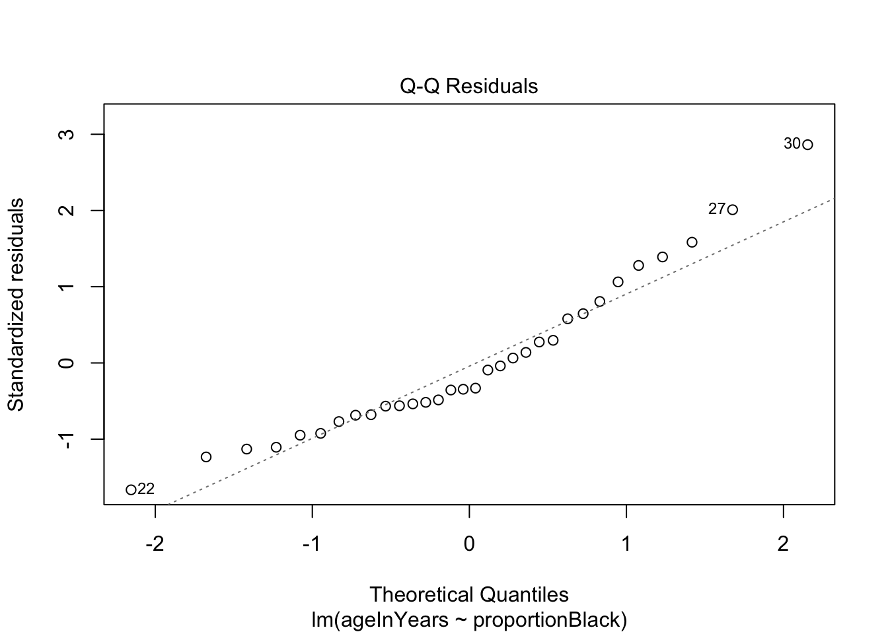
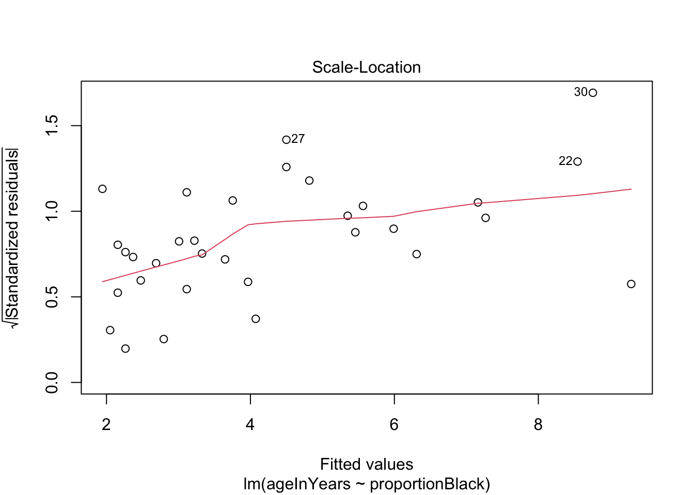
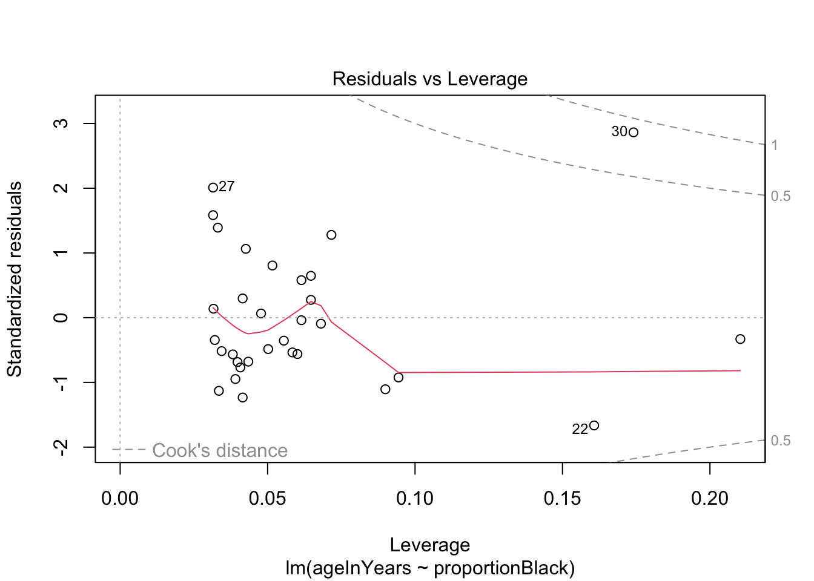
More on how to read diagnostic plots can be found here and here.
9.4.3 Making predictions
Remember that one of the goals of the study was to see if we could predict a lion’s age based on the nose coloration. How good is our model at this task?
There are lots of functions that can be applied to the output of lm(), and predict() is one of them we can use now (Note: for documentation, search predict.lm). For example, here is how to predict mean lion age corresponding to a value of 0.50 of proportion black in the nose.
yhat <- predict(lionFitOutput, data.frame(proportionBlack = 0.50), se.fit = TRUE, interval = "prediction", level = 0.95)
data.frame(yhat) fit.fit fit.lwr fit.upr se.fit df residual.scale
1 6.202566 2.698512 9.70662 0.3988321 30 1.668764In the output, predicted age is indicated by fit , the standard error of the predicted mean age is se.fit, and the upper and lower 95% prediction intervals are indicated by fit.lwr and fit.upr.
We can repeat this prediction for all ages and visualize the uncertainty we should expect in our predictions.
lion_predict <- data.frame(lion, predict(lionFitOutput, interval = "prediction"))Warning in predict.lm(lionFitOutput, interval = "prediction"): predictions on current data refer to _future_ responsesggplot(lion_predict, aes(proportionBlack, ageInYears)) +
geom_ribbon(aes(ymin = lwr, ymax = upr, fill='prediction'),
fill = "black", alpha = 0.2) +
geom_line(aes(y = fit), color = "black") +
#geom_smooth(method = "lm", se = FALSE, col = "blue") +
geom_point(size = 3, color = "red") +
labs(x = "Proportion black", y = "Age (years)") 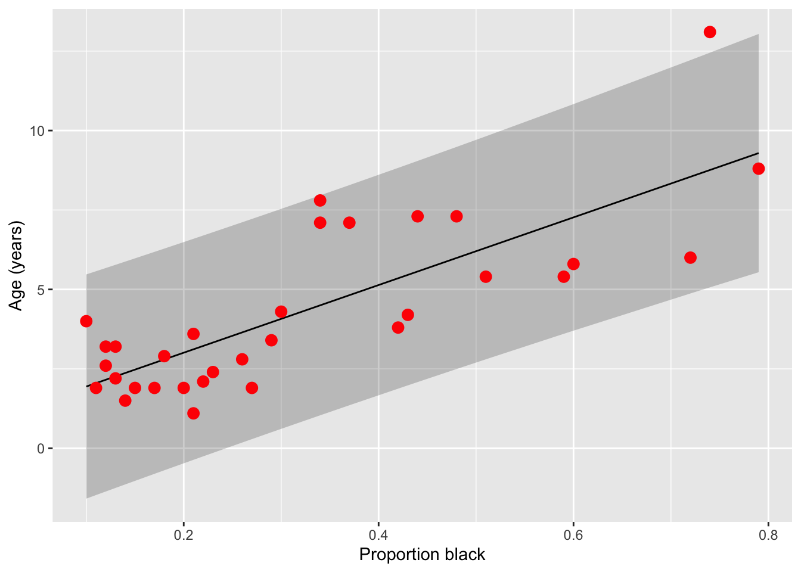
Note that prediction interval is wider than the confidence bands because predicting the age of a new individual lion age from the proportion black in its nose has higher uncertainty than predicting the mean age of all lions having that proportion of black on their noses.
9.4.4 Challenge
The authors simulations suggest that hunting only males 6 years of age and older would have minimal impact on the population sustainability. What is the range of nose colourations for which an age prediction of 6 years is within the 95% prediction interval. For what ages do these colourations correspond to the average levels?
9.4.5 Transforming variables
If you suspect the raw data are not normally distributed, but transformed versions of the data are, you can replace \(Y\) with \(f(Y)\) where \(f(\cdot)\) is the transformation and proceed with the analysis. The only thing to keep in mind is how to interpret the regression coefficients.
If \(\beta_1 = 0.1\) when regression \(f(Y)\) on \(x_1,\dots,x_p\), then that means _per unit change in \(x_1\), all else constant, \(f(Y)\) increases, on average, by unit 0.1. This does NOT mean that \(Y\), on the raw scale, increases by that amount.
9.5 Regressing on categorical variables
It turns out that we can use the exact same framework to regress \(Y\) on discrete, as well as continuous, predictor variables.
To see how this is done, and how to interpret the resulting regression coefficients, suppose a predictor has \(K\) levels. To estimate the effect of one of these levels on the response variable (say, of sampling individuals in a particular country), one of the levels of the discrete variable is treated as a “reference” and effects are estimated for all other levels. That is, we define the model in terms of a baseline and to interpret the regression coefficients relative to this baseline. This involves coding “dummy variables” for all but one the \(K\) values the predictor can take assume and estimating regression coefficients for each of these variables.
The regression coefficient for a “dummy variable” (associated to one of the values a categorical predictor) measures the expected change in the response, all else constant, if we were to change from the baseline to the level of interest.
This is most straightforward for binary outcomes, but works for outcomes with many levels as well.
9.5.1 Example: In mammals, is there an effect of sex on body size?
To try this out, we’ll go back to out dataset on sexual dimorphism in mammals. After some data “cleaning” we did in Assignment 2, we’ll do a very crude test of the hypothesis that males and females differ in size. In particular, we will determine the quantitative effect of sex is on the size of a typical individual, regardless of their species, sampling effort, etc. Much more complicated models can be constructed, but it turns out these models give rise to qualitatively-similar conclusions.
mammal_sizes <- read_csv("data/SSDinMammals.csv")Rows: 691 Columns: 18
── Column specification ────────────────────────────────────────────────────────
Delimiter: ","
chr (6): Order, Family, Species, Scientific_Name, Comments, Source
dbl (12): massM, SDmassM, massF, SDmassF, lengthM, SDlengthM, lengthF, SDlen...
ℹ Use `spec()` to retrieve the full column specification for this data.
ℹ Specify the column types or set `show_col_types = FALSE` to quiet this message.head(mammal_sizes)# A tibble: 6 × 18
Order Family Species Scientific_Name massM SDmassM massF SDmassF lengthM
<chr> <chr> <chr> <chr> <dbl> <dbl> <dbl> <dbl> <dbl>
1 Afrosorici… Chrys… Hotten… Amblysomus hot… 80.6 1.24 66 8.64 NA
2 Afrosorici… Chrys… Namib … Eremitalpa gra… 28 6.7 23.1 3.6 NA
3 Afrosorici… Tenre… Lesser… Echinops telfa… 102. 19.3 99.9 17.8 NA
4 Afrosorici… Tenre… Large-… Geogale aurita 7.3 1.02 7 1.34 NA
5 Afrosorici… Tenre… Highla… Hemicentetes n… 111 15.6 98 6.56 NA
6 Afrosorici… Tenre… Lowlan… Hemicentetes s… 110. 16.7 108. 16.0 NA
# ℹ 9 more variables: SDlengthM <dbl>, lengthF <dbl>, SDlengthF <dbl>,
# n_M <dbl>, n_F <dbl>, n_Mlength <dbl>, n_Flength <dbl>, Comments <chr>,
# Source <chr>Remember that the unit of measurement here is a species. To pre-process the data, we’ll do a few steps
Filter only for columns we care about - those describing the taxonomy of the species, and those tracking mean length, mean weight, and number of individuals of that species observed
Only includes species were at least 10 males and 10 females were observed
Get rid of any duplicated data
Convert the data from wide to long format, so that there is only one column each for length, weight, and n and another column for the sex (male or female)
mammal_long <- mammal_sizes %>%
select("Order","Family","Species","Scientific_Name", "massM", "massF","lengthM","lengthF","n_M","n_F") %>%
filter(n_M > 10 & n_F > 10)
mammal_long_mass <- mammal_long %>%
select(-lengthM,-lengthF, -n_M, -n_F) %>%
pivot_longer(c(massM, massF), names_to = "sex", values_to = "mass",
names_pattern = "mass(.)") %>%
group_by(Scientific_Name, sex) %>%
distinct(Scientific_Name, sex, .keep_all = TRUE)
mammal_long_length <- mammal_long %>%
select(-massM,-massF, -n_M, -n_F) %>%
pivot_longer(c(lengthM, lengthF), names_to = "sex", values_to = "length",names_pattern = "length(.)") %>%
group_by(Scientific_Name, sex) %>%
distinct(Scientific_Name, sex, .keep_all = TRUE)
mammal_long_number <- mammal_long %>%
select(-massM,-massF, -lengthM, -lengthF) %>%
pivot_longer(c(n_M, n_F), names_to = "sex", values_to = "number",names_pattern = "n_(.)") %>%
group_by(Scientific_Name, sex) %>%
distinct(Scientific_Name, sex, .keep_all = TRUE)
mammal_long <- full_join(mammal_long_mass, mammal_long_length) %>%
full_join(mammal_long_number)Joining with `by = join_by(Order, Family, Species, Scientific_Name, sex)`
Joining with `by = join_by(Order, Family, Species, Scientific_Name, sex)`rm(mammal_long_mass,mammal_long_length,mammal_long_number) # clear, don't need
head(mammal_long)# A tibble: 6 × 8
# Groups: Scientific_Name, sex [6]
Order Family Species Scientific_Name sex mass length number
<chr> <chr> <chr> <chr> <chr> <dbl> <dbl> <dbl>
1 Afrosoricida Chrysochloridae Hotten… Amblysomus hot… M 80.6 NA 155
2 Afrosoricida Chrysochloridae Hotten… Amblysomus hot… F 66 NA 148
3 Afrosoricida Tenrecidae Lesser… Echinops telfa… M 102. NA 24
4 Afrosoricida Tenrecidae Lesser… Echinops telfa… F 99.9 NA 15
5 Afrosoricida Tenrecidae Large-… Geogale aurita M 7.3 NA 17
6 Afrosoricida Tenrecidae Large-… Geogale aurita F 7 NA 15Now let’s do the regression!
mammal_size_sex_fit <- lm(log(mass) ~ sex, data = mammal_long)
summary(mammal_size_sex_fit)
Call:
lm(formula = log(mass) ~ sex, data = mammal_long)
Residuals:
Min 1Q Median 3Q Max
-4.0918 -2.0342 -0.9029 1.9052 11.2435
Coefficients:
Estimate Std. Error t value Pr(>|t|)
(Intercept) 5.11383 0.13805 37.042 <2e-16 ***
sexM 0.07658 0.19524 0.392 0.695
---
Signif. codes: 0 '***' 0.001 '**' 0.01 '*' 0.05 '.' 0.1 ' ' 1
Residual standard error: 2.73 on 780 degrees of freedom
Multiple R-squared: 0.0001972, Adjusted R-squared: -0.001085
F-statistic: 0.1539 on 1 and 780 DF, p-value: 0.695Remarkably, no effect! Males are not larger than females. The \(p\) value is not only \(>\alpha = 0.05\), the size of the estimated effect is quite small. This is pretty suprising, given the large number of papers that claim, despite the lack of evidence, that there are stark differences in size between male and female individuals.
It’s still important to visualize our effects, but in this case that’s a little more difficult that just plotting a line. Instead, let’s use a
mammal_long %>% ggplot(aes(x = sex, y = log(mass))) +
geom_violin() +
geom_jitter(alpha = 0.5, width = 0.1) +
geom_smooth(aes(group = 1), method = "lm")`geom_smooth()` using formula = 'y ~ x'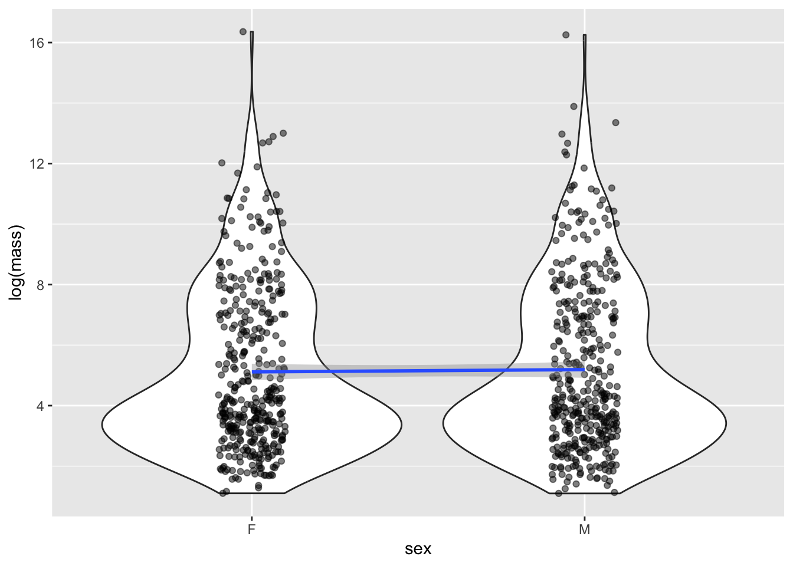
Although it seems weird to do a linear regression on a categorical x value, it turn out it’s totally legit, and is actually exactly equivalent to do a standard test for differences in means using the famous Student’s t-test.
9.6 Multivariable regression
9.6.1 Including multiple predictor variables
It is straightforward to extend the simple regression model to include multiple covariates/predictors. Suppose, for each realization of \(Y\), we have associated measurements \(x_1,\dots,x_p\). We can model how \(Y\) changes with these predictors as follows:
\[Y \sim \text{Normal}(\beta_0 + \beta_1 x_1 + \beta_2 x_2 + \cdots + \beta_p, \sigma^2).\] The likelihood that arises from data \((y_i,x_{1i},\dots,x_{pi})\) where \(i=1,\dots,n\) is
\[L(\beta_0,\dots,\beta_p,\sigma^2) = \prod_{i=1}^n \frac{1}{\sqrt{2 \pi \sigma^2}} e^{-(y_i-\beta_0-\beta_1 x_{1i}-\cdots-\beta_p x_{pi})^2/2\sigma^2}.\]
Again, assumptions of this model include
- The data, i.e., observations of the response \(Y\), are independent (and normally) distributed for a given set of predictor values \({x_i}\)
- The mean response is a linear function of the predictors.
- The error variance \(\sigma^2\) is constant and, thus, does not depend on the predictors.
- The parameters \(\beta_0,\dots,\beta_p\) (called regression coefficients or effect sizes) are non-random.
- The predictors are known with certainty.
Maximum likelihood estimation gives rise to point and interval estimates for \(\beta_1,\dots,\beta_p,\sigma^2\).3
We must be careful how we interpret the parameters of any statistic model after we fit the model to data. This is definitely true of the regression coefficients \(\beta_1,\dots,\beta_p\). The estimates are not the same as the “true” values the parameters assume; they are our best guess of the “true” regression coefficients, given the (limited, imperfect, incomplete, noisy) data that we have. Moreover, \(\beta_j\) must be understood as the amount the average value of the response variable changes when the predictor \(x_j\) increases by one unit, assuming all else is constant.
That is, \(\beta_j\) is a measure of the sensitivity of \(E(Y)\) to \(x_j\) — how much does \(Y\) change, on average, if we increase \(x_j\) by one unit.
Finally, linear models can accommodate non-linear interactions between explanatory variables. If \(x_2 = x_1^2\), one can estimate an effect for \(x_2\) (and do the same for all higher order terms for \(x_1\) and the other covariates). This effect sizes that are estimated have to be interpreted carefully but does not pose a difficulty to forming the likelihood nor maximizing it.
9.6.2 Including interaction terms
Other interactions can also be modeled. For example, suppose we were interested in the combined effects of changing salinity and temperature on the number of species in an ecosystem because we suspect that changing salinity has little effect on the effect on the number of species if temperature in high (e.g., there are no species left). Then, letting \(x_1\) be salinity and \(x_2\) temperature, their interaction would be included as a covariate \(x_3 = x_1 x_2\) and the associated effect estimated from the data.
When there are interactions, coefficients are interpreted as follows. We can say that \(\beta_1\) is the expected change in the response if we increase \(x_1\) by one unit and set all covariates with which it interacts equal to zero. The effect size for the interaction between \(x_1\) and \(x_2\) measures the change in the the expected response if \(x_1\) and \(x_2\) were to BOTH increase by one unit that is on top of or in addition to the change due each variable in isolation.
9.6.3 Example: Does sexual dimorphism vary by order?
First, let’s try to extend our examination of the impact of sex on body mass by trying to see if there is a different relationship depending on the Order the species belongs to. To do this, we’ll regress on both sex and Order, and their interaction.
First, we’ll filter for Orders that have at least 10 species with both male and female data, since we expect it to be difficult to identify effects otherwise. Note that we don’t need to do this : regression analyses already takes into account uncertainty due to low samples and be very unlikely to reject a null hypothesis - but it doint so will simplify our output and interpretation
mammal_long_order10 <- mammal_long %>%
group_by(Order,sex) %>%
mutate(n_Order = n()) %>%
filter(n_Order > 10) %>%
select(-n_Order)
mammal_size_sex_order_fit <- lm(log(mass) ~ sex+Order+sex*Order, data = mammal_long_order10)
summary(mammal_size_sex_order_fit)
Call:
lm(formula = log(mass) ~ sex + Order + sex * Order, data = mammal_long_order10)
Residuals:
Min 1Q Median 3Q Max
-7.2033 -0.7920 -0.1814 0.7113 5.7114
Coefficients:
Estimate Std. Error t value Pr(>|t|)
(Intercept) 3.14172 0.36683 8.565 < 2e-16 ***
sexM -0.01685 0.51877 -0.032 0.97410
OrderArtiodactyla 7.50428 0.44927 16.703 < 2e-16 ***
OrderCarnivora 5.11339 0.48730 10.493 < 2e-16 ***
OrderChiroptera -0.32412 0.39163 -0.828 0.40815
OrderDidelphimorphia 1.56146 0.54184 2.882 0.00407 **
OrderDiprotodontia 4.73150 0.52947 8.936 < 2e-16 ***
OrderEulipotyphla 0.04496 0.47120 0.095 0.92401
OrderPrimates 4.29798 0.41263 10.416 < 2e-16 ***
OrderRodentia 1.12821 0.38529 2.928 0.00352 **
sexM:OrderArtiodactyla 0.20571 0.63536 0.324 0.74621
sexM:OrderCarnivora 0.31179 0.68915 0.452 0.65110
sexM:OrderChiroptera -0.03183 0.55384 -0.057 0.95418
sexM:OrderDidelphimorphia 0.18088 0.76627 0.236 0.81346
sexM:OrderDiprotodontia 0.06423 0.74878 0.086 0.93167
sexM:OrderEulipotyphla 0.12244 0.66637 0.184 0.85427
sexM:OrderPrimates 0.18522 0.58354 0.317 0.75103
sexM:OrderRodentia 0.10076 0.54488 0.185 0.85335
---
Signif. codes: 0 '***' 0.001 '**' 0.01 '*' 0.05 '.' 0.1 ' ' 1
Residual standard error: 1.323 on 716 degrees of freedom
Multiple R-squared: 0.7693, Adjusted R-squared: 0.7638
F-statistic: 140.4 on 17 and 716 DF, p-value: < 2.2e-16Notice that in the Order + Sex interaction model, there are significant effects of the Order on body mass but the effect of sex, even when order-specific, on mass is not significant. That is, the associated regression coefficients have confidence intervals overlapping zero, so that we fail to reject the null hypothesis \(H_0: \beta_j = 0\).
9.6.4 Example: Do body dimensions vary by sex or Order?
In addition to body mass, our data set also contains body length. Maybe something about the distribution of body mass - i.e., the relationship between body mass and length - differs by sex. Let’s regress body size on length - but first, let’s make a plot. We’ll use the same filtered data we created above
mammal_long_order10 %>%
ggplot(aes(x = length, y = mass)) +
#ggplot(aes(x = log(length), y = log(mass))) +
geom_point()Warning: Removed 400 rows containing missing values or values outside the scale range
(`geom_point()`).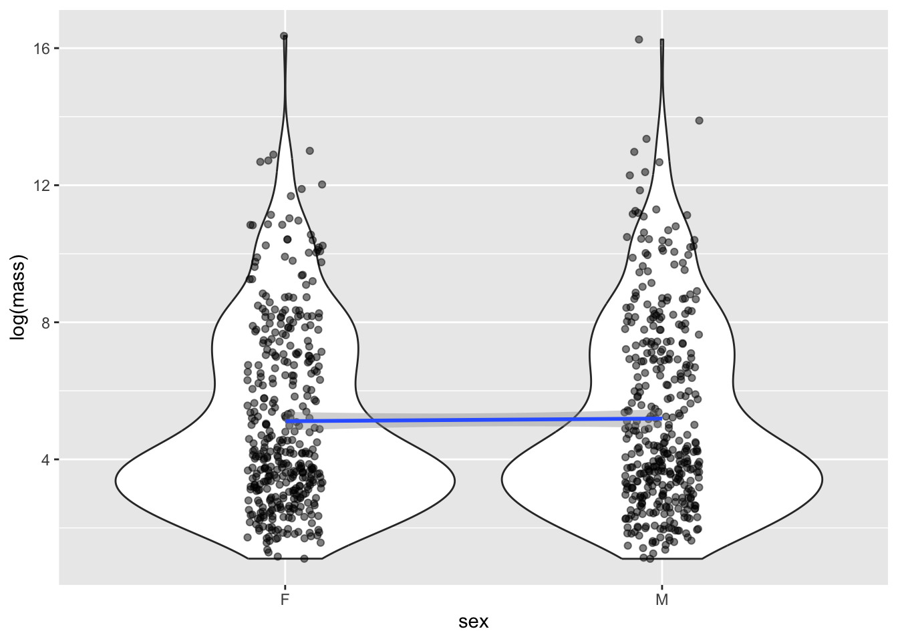
Length and weight both vary over enormous scales (think about comparing a mouse to an elephant) - so this is the perfect situation to do a transformation. Let’s try log
mammal_long_order10 %>%
ggplot(aes(x = log10(length), y = log10(mass))) +
geom_point()Warning: Removed 400 rows containing missing values or values outside the scale range
(`geom_point()`).
Now let’s fit a regression
mass_vs_length_fit <- lm(log10(mass) ~ log10(length), data = mammal_long_order10)
summary(mass_vs_length_fit)
Call:
lm(formula = log10(mass) ~ log10(length), data = mammal_long_order10)
Residuals:
Min 1Q Median 3Q Max
-2.0088 -0.2233 -0.0175 0.2498 1.6188
Coefficients:
Estimate Std. Error t value Pr(>|t|)
(Intercept) -0.13627 0.05849 -2.33 0.0204 *
log10(length) 1.86194 0.05197 35.83 <2e-16 ***
---
Signif. codes: 0 '***' 0.001 '**' 0.01 '*' 0.05 '.' 0.1 ' ' 1
Residual standard error: 0.4505 on 332 degrees of freedom
(400 observations deleted due to missingness)
Multiple R-squared: 0.7945, Adjusted R-squared: 0.7939
F-statistic: 1283 on 1 and 332 DF, p-value: < 2.2e-169.6.5 Challenge
- How would you interpret the coefficient here? Remember that the data has been log transformed
- List at least 2 ways this data violates the assumptions of simple linear regression with this current model fit
- Examine whether including sex or Order would explain this data better. Before fitting, use a visualization to motivate your choice, and after fitting, interpret the results
Whitman, K., Starfield, A., Quadling, H. & Packer, C. Sustainable trophy hunting of African lions. Nature 428, 175–178 (2004). https://doi.org/10.1038/nature02395↩︎
Whitlock, Michael, & Dolph Schluter. The analysis of biological data. Third Edition. Macmillen Publishers. (2020) [https://www.macmillanlearning.com/college/us/product/The-Analysis-of-Biological-Data/p/131922623X]↩︎
It is worth noting that what is often used in theory and practice is a matrix formulation of the model we have written down: \[\boldsymbol{y} = \begin{bmatrix} y_{1} \\ y_{2} \\ \vdots \\ y_{n} \end{bmatrix} = \begin{bmatrix} 1 & x_{11} & x_{21} & \cdots & x_{p1} \\ 1 & x_{12} & x_{22} & \cdots & x_{p2} \\ \vdots & \vdots & \vdots & & \vdots \\ 1 & x_{1n} & x_{2n} & \cdots & x_{pn} \end{bmatrix} \begin{bmatrix} \beta_{1} \\ \beta_{2} \\ \vdots \\ \beta_{p} \end{bmatrix} + \begin{bmatrix} \varepsilon_{1} \\ \varepsilon_{2} \\ \vdots \\ \varepsilon_{n} \end{bmatrix} = \boldsymbol{X} \boldsymbol{\beta} + \boldsymbol{\varepsilon}.\] Here, \(\boldsymbol{y} = (y_1,\dots,y_n)'\) is a vector of measurements for the response, \(\boldsymbol{x_i} = (x_{i1},\dots,x_{in})'\) is a vector of measurements for the \(k\)th predictor, and \(\boldsymbol{\varepsilon} = (\varepsilon_1,\dots,\varepsilon_n)'\) is a vector of measurement errors. The \('\) symbol denotes transposition, the operation where the rows and columns of a vector or matrix are interchanged. In R, the function
t()can be used to transpose a vector or matrix.↩︎